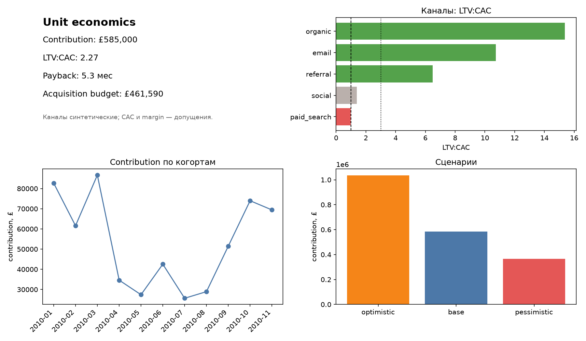
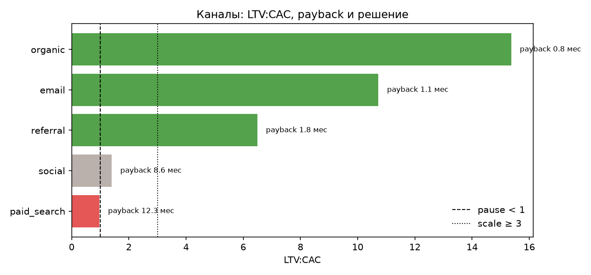
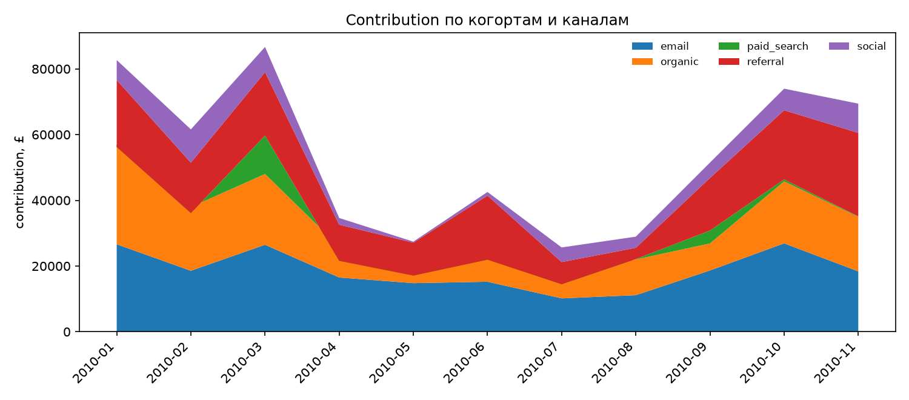
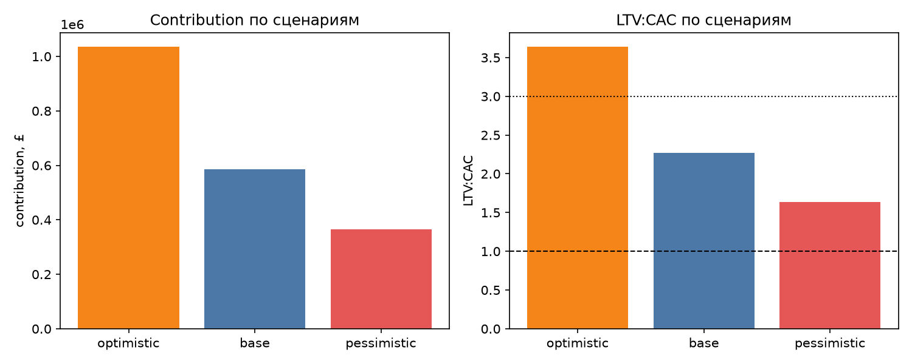
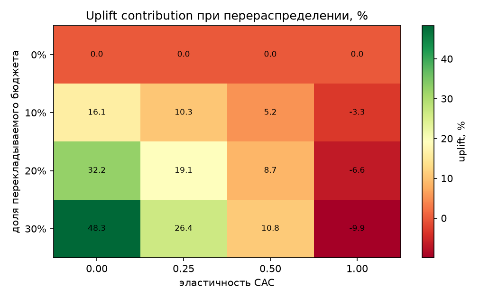

Синтетические каналы; CAC и margin — сценарные допущения. Данные вне git.

| channel | n | budget | LTV:CAC | payback | decision |
|---|---|---|---|---|---|
| organic | 576 | £11,520 | 15.37 | 0.8 | scale |
| 697 | £20,910 | 10.73 | 1.1 | scale | |
| referral | 510 | £30,600 | 6.49 | 1.8 | scale |
| social | 692 | £138,400 | 1.40 | 8.6 | keep |
| paid_search | 813 | £260,160 | 0.97 | 12.3 | pause |
| scenario | contribution | LTV:CAC | payback |
|---|---|---|---|
| optimistic | £1,035,197 | 3.64 | 3.3 |
| base | £585,000 | 2.27 | 5.3 |
| pessimistic | £364,943 | 1.63 | 7.4 |



